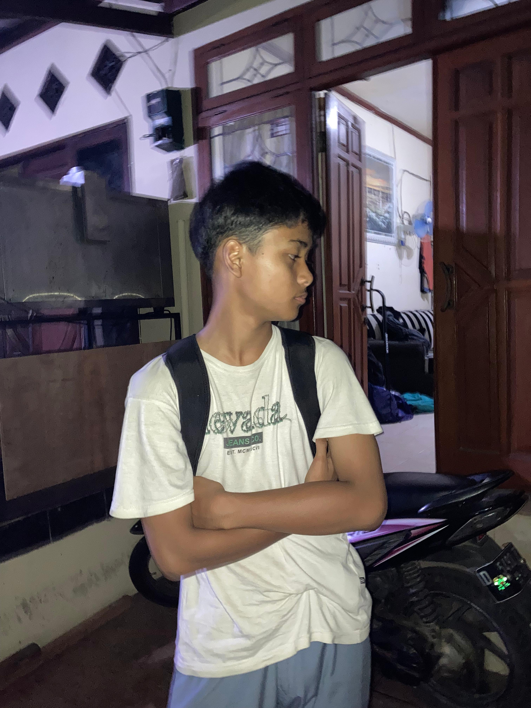
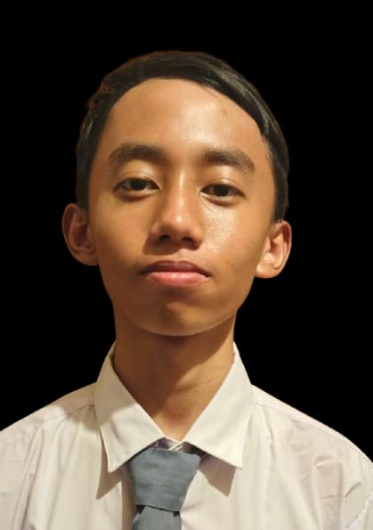
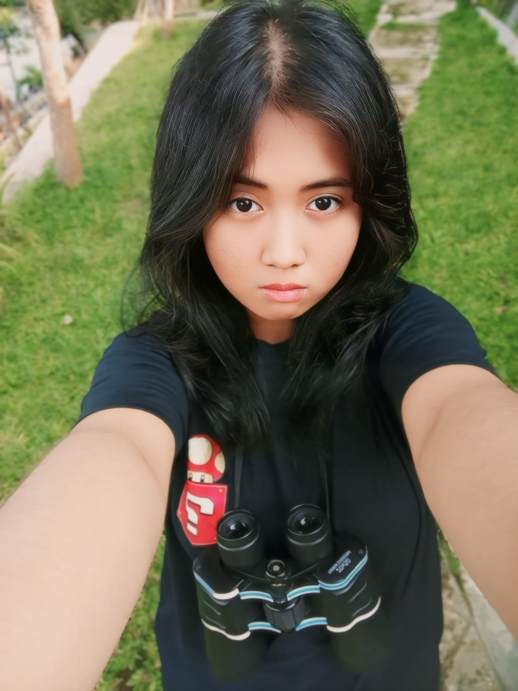
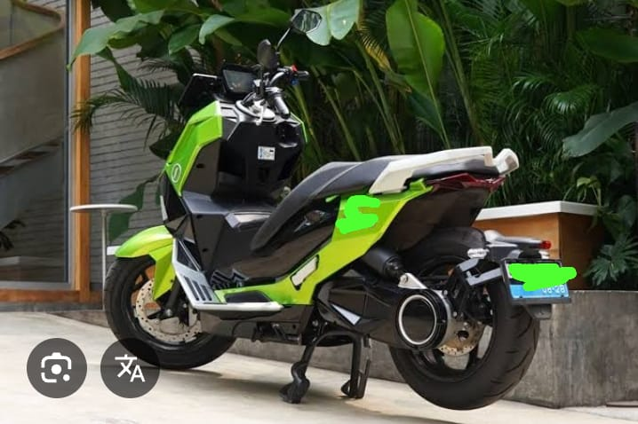
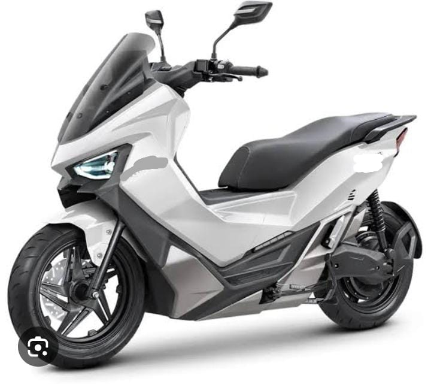
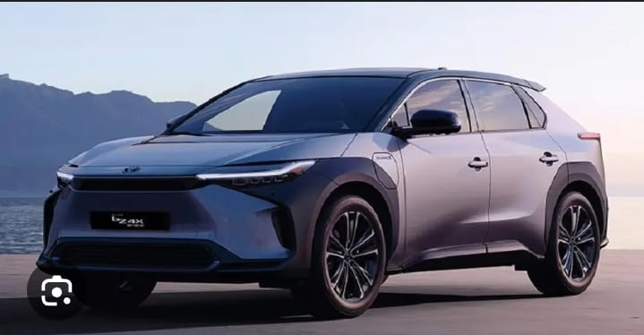

PT. Hotic Asmara Indah adalah perusahaan swasta nasional yang memiliki potensi besar untuk berkembang pesat.
Didirikan pada tahun 2025, kami berfokus pada pengembangan dan produksi mobil serta motor listrik dengan komitmen
untuk memberikan solusi transportasi ramah lingkungan bagi masyarakat.
Dengan pusat riset dan pabrik utama di Indonesia, kami bertekad menjadi pionir dalam industri kendaraan listrik
Asia Tenggara serta berkontribusi pada pengurangan emisi karbon global.
Struktur Jabatan

Direktur Utama
M. Febriansyah
Bertanggung jawab atas arah strategis dan pengambilan keputusan utama perusahaan.

Manajer Operasional
Chiyo Oktavian
Mengelola kegiatan operasional harian serta memastikan efisiensi produksi mobil listrik.

Admin
Arini Haqiqi
Menangani administrasi, dokumentasi, dan dukungan untuk seluruh tim perusahaan.
Visi
Menjadi pelopor utama dalam mobilitas berkelanjutan di Indonesia dengan memproduksi kendaraan listrik yang inovatif,
terjangkau, dan berkualitas tinggi, untuk menciptakan lingkungan yang lebih bersih dan masa depan yang lebih hijau bagi semua.
Misi
Inovasi Teknologi: Mengembangkan teknologi baterai dan motor listrik terkini untuk efisiensi energi dan performa optimal.
Kualitas & Keamanan: Memenuhi standar keamanan internasional dan menjaga daya tahan kendaraan.
Aksesibilitas Pasar: Menyediakan model kendaraan dengan harga kompetitif dan mudah diakses.
Dampak Lingkungan Positif: Berkomitmen pada produksi ramah lingkungan dan pengurangan emisi karbon.
Pengembangan Infrastruktur: Membangun jaringan stasiun pengisian daya di seluruh Indonesia.
SOP Singkat Perusahaan Otomotif Mobil Listrik
SOP Penerimaan Bahan Baku
Periksa kualitas dan kuantitas bahan baku sesuai standar (battery cell, motor listrik, komponen body, dsb).
Catat data penerimaan di sistem logistik.
Simpan bahan sesuai kategori dan protokol keselamatan.
SOP Produksi Kendaraan
Persiapan peralatan dan pengecekan kondisi mesin produksi.
Perakitan kendaraan sesuai urutan: rangka → motor listrik → baterai → interior → body.
Atur pengiriman sesuai alamat dan jadwal dealer/konsumen.
SOP Layanan Purna Jual
Terima keluhan atau permintaan servis dari konsumen.
Diagnosa masalah dan lakukan perbaikan oleh teknisi bersertifikat.
Catat semua kegiatan servis untuk keperluan garansi dan data produk.
K3LH PT. Hotic Asmara Indah
1. Tujuan
Menjamin keselamatan, kesehatan kerja, dan kelestarian lingkungan dalam seluruh kegiatan operasional
PT. Hotic Asmara Indah, khususnya dalam proses penjualan, perawatan, dan pengiriman mobil listrik.
2. Kebijakan K3LH
PT. Hotic Asmara Indah berkomitmen untuk:
Menyediakan tempat kerja yang aman, bersih, dan bebas dari potensi bahaya.
Melindungi karyawan, pelanggan, dan lingkungan dari risiko yang timbul akibat aktivitas operasional.
Mengurangi limbah dan emisi karbon sesuai prinsip ramah lingkungan.
Mematuhi seluruh peraturan pemerintah tentang K3 dan lingkungan hidup.
3. Prosedur Keselamatan Kerja
Pemeriksaan kendaraan listrik secara rutin sebelum dikirim ke pelanggan (baterai, sistem listrik, dan rem).
Pelatihan K3 bagi karyawan showroom dan teknisi mengenai penggunaan alat pelindung diri (APD).
Penyimpanan baterai mobil listrik di ruang khusus yang memiliki ventilasi dan sistem pemadam otomatis.
Larangan merokok atau membawa sumber api di area servis dan gudang baterai.
Pemasangan rambu-rambu keselamatan di seluruh area kerja.
4. Kesehatan Kerja
Pemeriksaan kesehatan rutin bagi seluruh karyawan.
Penyediaan P3K (Pertolongan Pertama Pada Kecelakaan) di tiap area kerja.
Pemberian waktu istirahat yang cukup untuk mencegah kelelahan kerja.
Edukasi ergonomi untuk staf kantor agar terhindar dari cedera ringan.
5. Lingkungan Hidup
Menggunakan energi listrik dan peralatan hemat daya di kantor dan showroom.
Mendaur ulang limbah non-B3 (seperti kardus, plastik, dan kertas).
Pengelolaan limbah baterai sesuai standar lingkungan (tidak dibuang sembarangan).
Penanaman pohon di area sekitar kantor sebagai upaya penghijauan.
6. Tanggung Jawab
Manajemen: memastikan pelaksanaan dan pengawasan K3LH berjalan sesuai prosedur.
Karyawan: mematuhi seluruh aturan K3LH dan melaporkan potensi bahaya.
Tim K3LH: melakukan audit, inspeksi, dan pelatihan rutin.
7. Penutup
Dengan penerapan K3LH yang baik, PT. Hotic Asmara Indah berharap tercipta lingkungan kerja yang aman,
sehat, dan berwawasan hijau, serta memberikan pelayanan terbaik bagi pelanggan tanpa mengorbankan keselamatan dan lingkungan.
Analisis SWOT PT. Hotic Asmara Indah
🟢 Strengths (Kekuatan)
Ramah lingkungan, sesuai tren global kendaraan listrik.
Efisiensi energi lebih tinggi dibanding mobil bensin.
Brand lokal → harga lebih kompetitif dari impor.
Dukungan pemerintah (subsidi & insentif pajak).
Potensi kerja sama dengan PLN, Pertamina, dan transportasi online.
🔴 Weaknesses (Kelemahan)
Biaya produksi awal sangat besar (modal tinggi).
Infrastruktur pengisian daya masih terbatas.
Keterbatasan SDM ahli di bidang baterai & motor listrik.
Proses R&D (penelitian & sertifikasi) memakan waktu lama.
Kepercayaan konsumen masih rendah terhadap produk lokal baru.
🟡 Opportunities (Peluang)
Tren global menuju kendaraan listrik terus meningkat.
Harga BBM naik → konsumen cari alternatif hemat energi.
Pemerintah dorong target net zero emission 2060.
Pasar Indonesia besar dan terus berkembang.
Peluang ekspor ke negara berkembang.
🔵 Threats (Ancaman)
Persaingan ketat dengan brand asing (Tesla, Hyundai, Wuling, BYD).
Fluktuasi harga bahan baku baterai (nikel, lithium).
Perubahan regulasi pemerintah (subsidi & pajak).
Kendala infrastruktur (listrik padam, jalan tidak mendukung).
Konsumen masih terbiasa dengan mobil BBM.
Produk Kami

Motor Speedzers 2025
Motor yang dirancang khusus dengan gaya elegan dan performa tinggi untuk generasi modern.

Motor ESmax 3000
Motor dengan body gagah, suara gahar, dan efisiensi tenaga listrik luar biasa.
Mobil Lektron
Mobil listrik yang awet baterai, ramah lingkungan, dan nyaman digunakan sehari-hari.

Mobil Trektron
Mobil tangguh untuk perjalanan jauh dan jalan menanjak, cocok untuk petualangan.